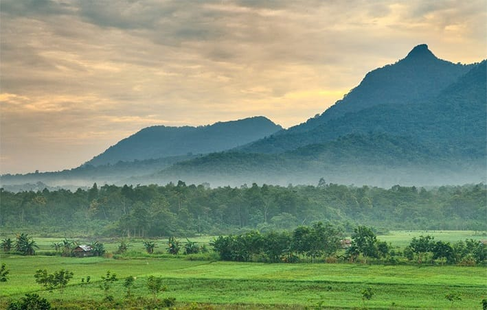

Mengenal lebih dekat visi dan misi kami dalam membuat perusaan waterwoah.
Water Woah didirikan pada 2025 dengan tujuan menghadirkan pengalaman hidrasi premium. Terinspirasi dari ekspresi "Woah" saat merasakan kesegaran air murni, merek ini bertekad menyajikan air mineral dari sumber pegunungan alami yang diproses dengan teknologi modern. Water Woah hadir untuk memenuhi kebutuhan air berkualitas bagi gaya hidup dinamis, menjamin air yang tidak hanya melepas dahaga, tetapi juga memberikan sensasi energi dan kemurnian..
